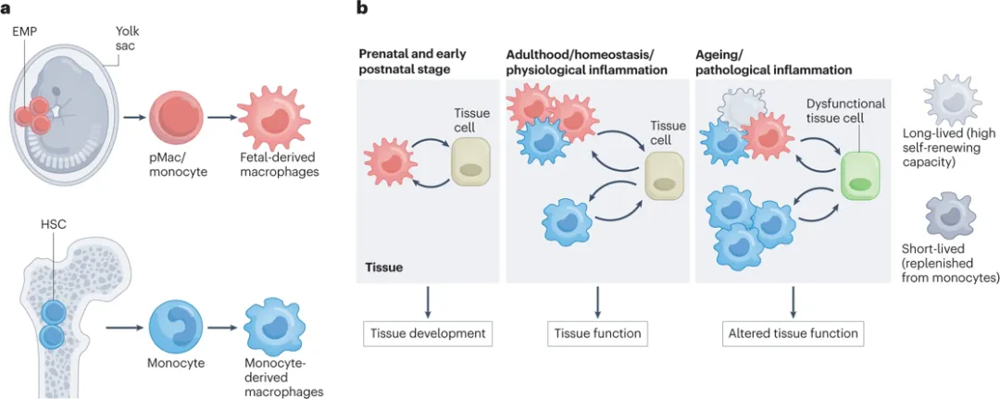
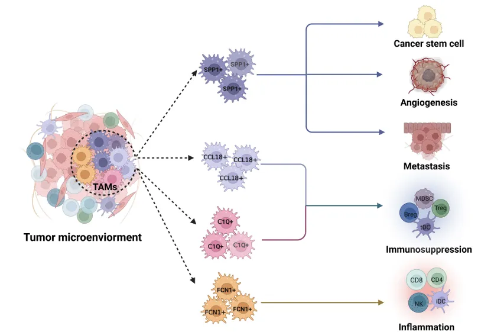
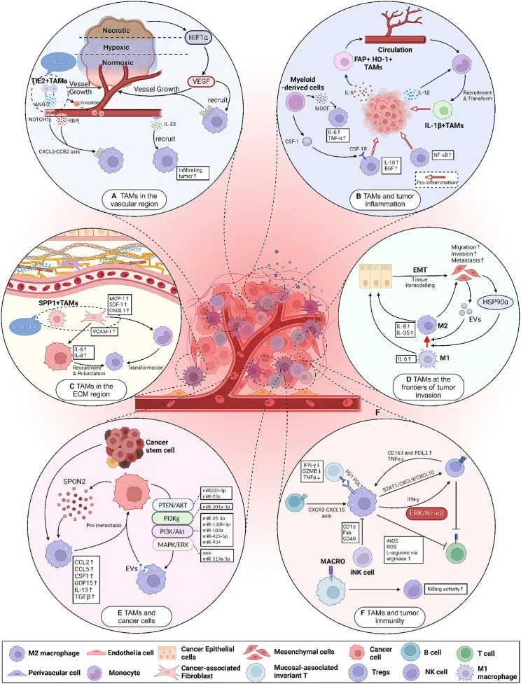
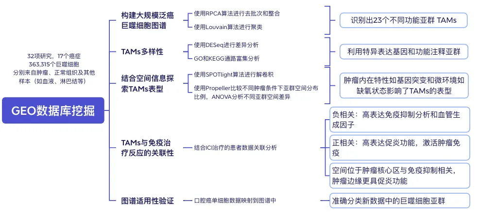
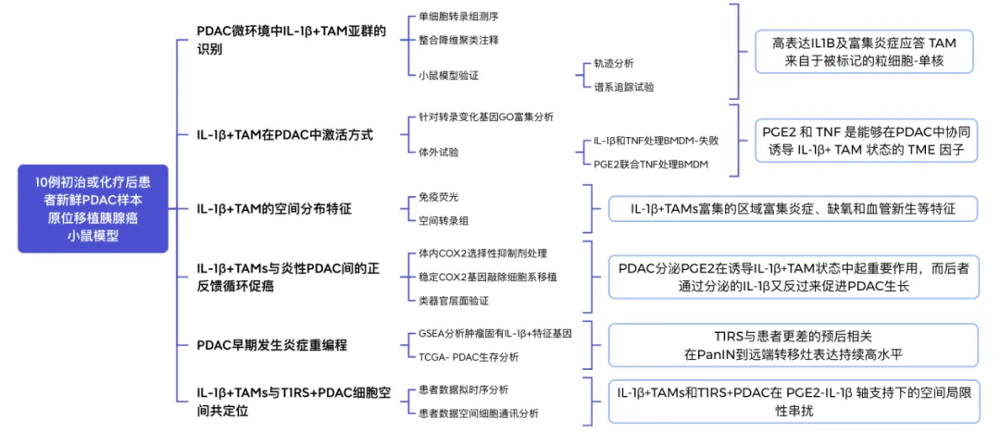
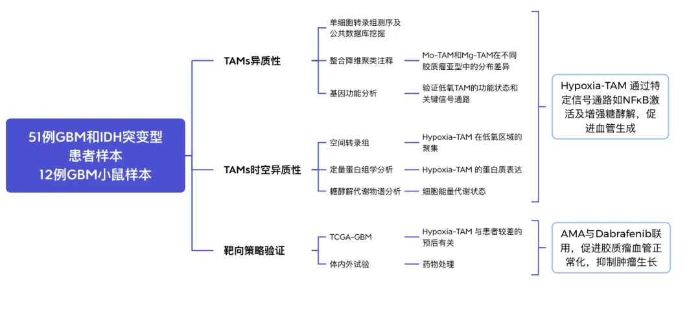
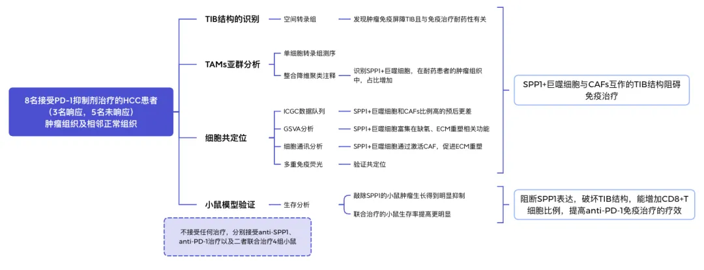
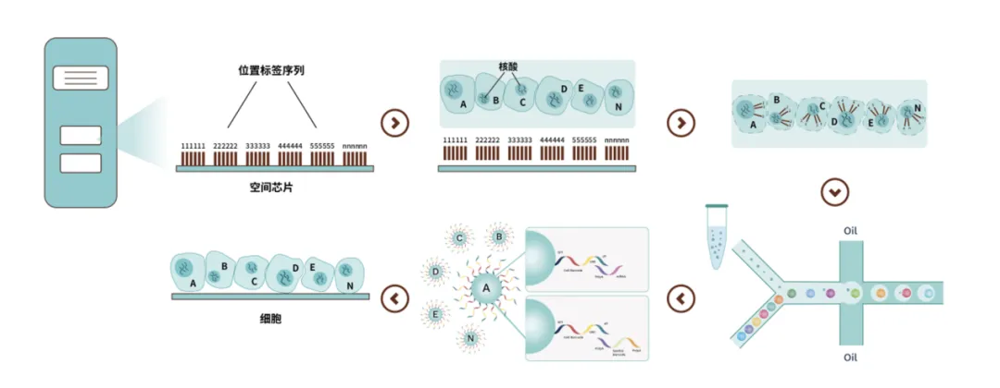
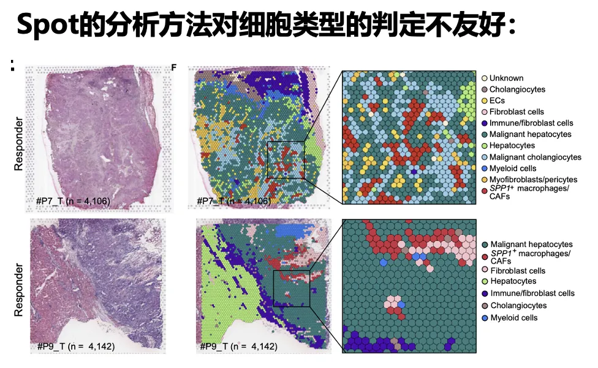
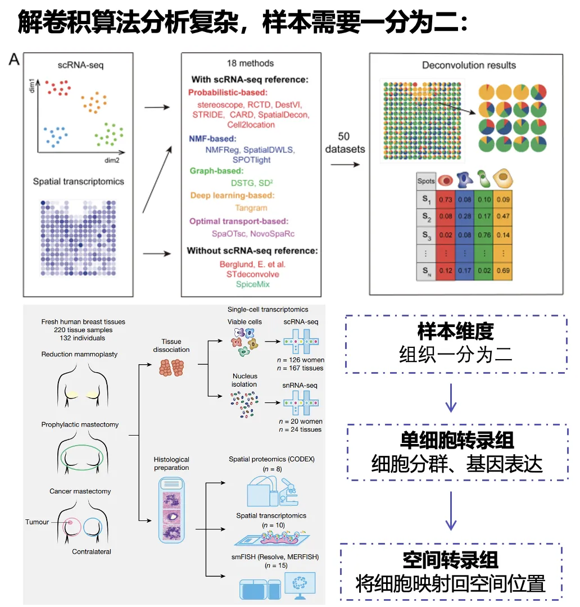

揭示肿瘤巨噬细胞异质性的全新视角|单细胞与空间转录组
原文：https://mp.weixin.qq.com/s?__biz=MzAwMzIzOTk5OQ==&mid=2247525650&idx=6&sn=56a0c83b87534867de6290d00b02cf0f&chksm=9b3c1c42ac4b95545dbf122119685a2e737138fcbb1abf9aa2eb829abdd733f398605b0b0e03#rd 合集：基金申报

导语 .
肿瘤相关巨噬细胞（TAMs）在肿瘤免疫微环境中扮演着多样化且复杂的角色。它们在肿瘤的生长、转移、免疫逃逸和治疗抵抗等过程中具有重要影响。随着单细胞测序和空间转录组学技术的发展，研究者对TAMs的异质性和时空特性的认识不断加深。寻因生物推出的SeekSpace®产品，凭借其在单细胞空间层面上不需分割样本即可捕捉细胞位置信息的优势，为肿瘤微环境的深入研究提供了创新解决方案。
国自然宝典纸质版和视频回看可添加小寻领取：


我是小寻
01
模块一：TAMs的背景
1、 巨噬细胞的起源与功能
巨噬细胞是人体免疫系统中的重要组成部分，它们在病原体清除、组织修复和免疫调控 中发挥着核心作用。巨噬细胞的起源可以分为两类：
胚胎起源的组织驻留巨噬细胞（TRMs）， 这些细胞在胚胎发育阶段便驻留于各组织，并维持终生
骨髓来源的单核细胞， 这些细胞在需要时进入组织并分化为巨噬细胞，特别是在炎症或组织损伤的情况下。

在正常组织环境中，巨噬细胞能够维持组织的稳态并参与修复。然而，在肿瘤微环境（TME）中，巨噬细胞受肿瘤分泌的信号分子 诱导，转变为肿瘤相关巨噬细胞（TAMs）。TAMs在TME中发挥了促肿瘤 的作用，包括促进血管生成、抑制免疫反应以及帮助肿瘤细胞逃避免疫监视。
2、 肿瘤相关巨噬细胞的异质性
TAMs的异质性主要表现在其功能多样性和空间分布差异 上。传统上，巨噬细胞被划分为M1型（促炎、抗肿瘤）和M2型（抗炎、促肿瘤）两大类。然而，随着单细胞测序技术的发展，研究者发现TAMs具有比简单的M1/M2划分更加复杂的功能和表型。
通过单细胞RNA测序，研究者能够揭示不同TAM亚群的存在，这些亚群在肿瘤的不同阶段和区域中发挥各自的功能。例如：
SPP1+巨噬细胞： 与肿瘤转移和血管生成密切相关，通常位于肿瘤边缘，形成免疫屏障，阻止免疫细胞的渗透。
C1Q+巨噬细胞： 主要参与免疫抑制和抗原呈递，帮助肿瘤逃避免疫系统的攻击。
FCN1+巨噬细胞： 与炎症反应相关，在局部微环境中促进促炎性反应 。

TAMs的异质性不仅体现在基因表达上，还表现在其动态的时空变化中。这些变化使得TAMs能够在肿瘤微环境中适应不断变化的条件，并对肿瘤的生长、转移及免疫逃逸产生深远影响。
3、 空间转录组学揭示TAMs 的空间异质性
空间转录组学的出现使得研究者能够在保持细胞空间位置信息的前提下，分析不同区域细胞的基因表达。这种技术为研究TAMs的空间分布及其与肿瘤微环境的相互作用提供了新的视角。通过空间转录组学技术，研究者发现TAMs在肿瘤的不同区域展现出不同的功能。例如：
血管周围的TAMs往往通过分泌VEGF等因子，促进肿瘤的血管生成；
肿瘤边缘的TAMs则通过与成纤维细胞协同作用，形成物理屏障，阻止T细胞的进入；
缺氧区域的TAMs表现出更强的免疫抑制性，帮助肿瘤细胞逃避免疫监视。

空间转录组学技术不仅揭示了TAMs的空间异质性，还帮助研究者理解了不同区域的TAMs在肿瘤进展和免疫逃逸中的功能差异。这种空间维度的分析为开发靶向TAMs的抗肿瘤疗法提供了重要线索。
02
模块二：TAMs的研究案例
近年来，单细胞RNA测序（scRNA-seq）和空间转录组学技术的应用极大地推动了肿瘤相关巨噬细胞（TAMs）研究的发展。这些技术允许研究人员从单细胞水平解析TAMs在肿瘤微环境中的异质性，并揭示它们的空间分布及其与其他细胞的相互作用。以下是这些技术在TAMs研究中的应用思路及其经典案例分享。
1、案例一：构建大规模泛癌TAMs图谱
《Using a pan-cancer atlas to investigate tumour associated macrophages as regulators of immunotherapy response》
期刊：Nature Communications
影响因子：14.7
发布时间：2024.7
研究方法：单细胞转录组测序，空间转录组
科研问题：探讨肿瘤相关巨噬细胞（TAMs）的异质性及其在免疫检查点抑制剂（ICI）治疗中的作用，揭示不同巨噬细胞亚型如何调节免疫反应。
亮点总结：首次构建了一个大规模的泛癌TAMs图谱，并深入分析了TAMs亚群在不同肿瘤类型中的分布及其与免疫治疗的关联。

案例一研究思路
2、案例二：IL-1β+ 巨噬细胞驱动胰腺癌病理性炎症
《IL-1β+ macrophages fuel pathogenic inflammation in pancreatic cancer》
期刊：Nature
影响因子：50.5
发布时间：2023.11
研究方法：单细胞转录组测序，空间转录组
科研问题：探讨IL-1β+巨噬细胞在胰腺癌中的病理性炎症作用，特别是IL-1β与PGE2的协同作用如何驱动胰腺癌相关巨噬细胞（TAMs）的促炎状态。
亮点总结：揭示了IL-1β+ TAMs通过炎症回路加剧胰腺癌的病理进展，并通过阻断PGE2–IL-1β轴进行治疗干预，从而提供了新的免疫治疗策略。

案例二研究思路
3、案例三：多组学联合探索 Hypoxia-TAM 在血管生成和调节的机制
《Identification of hypoxic macrophages in glioblastoma with therapeutic potential for vasculature normalization》
期刊：Cancer Cell
影响因子：48.8
发布时间：2024.05
研究方法：单细胞转录组测序，空间转录组
科研问题：探讨了不同的TAM亚型如何在胶质母细胞瘤 (GBM) 中调节肿瘤血管生成及其对治疗的潜在影响，尤其是Hypoxia-TAM的功能和机制。
亮点总结：揭示了TAM的空间异质性及其对血管生成和肿瘤进展的调控机制，提出靶向Hypoxia-TAM的潜在治疗策略。

案例三研究思路
4、案例四：TAMs介导HCC免疫屏障影响治疗效果
《Identification of a tumour immune barrier in the HCC microenvironment that determines the efficacy of immunotherapy》
期刊：Journal of Hepatology
影响因子：26.8
发布时间：2023.04
研究方法：单细胞转录组测序，空间转录组
科研问题：探讨肝细胞癌（HCC）微环境中肿瘤免疫屏障（TIB）如何通过TAMs与CAFs的相互作用，限制免疫细胞浸润，影响免疫检查点抑制剂（ICIs）治疗的疗效。
亮点总结：首次揭示了HCC中的肿瘤免疫屏障，SPP1+巨噬细胞和CAFs通过形成屏障限制免疫细胞浸润，影响免疫治疗效果，提出了SPP1作为潜在治疗靶点的临床应用可能性。

案例四研究思路
03
模块三：寻因生物单细胞与空间转录组产品的创新应用
随着单细胞和空间转录组技术的发展，研究者能够更深入地揭示TAMs的复杂异质性及其在肿瘤微环境中的作用。为此，寻因生物推出了**SeekSpace ®单细胞空间转录组产品，**通过高精度的物理分辨率和整合分析，帮助研究者从空间和功能层面解析肿瘤微环境中的巨噬细胞异质性。

（1）解析TAMs的空间异质性
SeekSpace®技术通过真实的物理单细胞分辨率，帮助研究者在肿瘤的不同区域识别和定位TAMs。例如，在肝癌和乳腺癌等肿瘤中，研究者可以利用该技术精确地分析TAMs在低氧区、血管区和肿瘤边缘 的分布情况。这种精确的空间定位为理解TAMs的功能提供了前所未有的深度。

（2）研究TAMs在肿瘤进展中的作用机制
通过结合单细胞测序和空间转录组技术，研究者能够追踪TAMs在不同肿瘤发展阶段的变化。寻因生物的技术能够帮助研究者理解TAMs在免疫抑制、血管生成和细胞外基质重塑 中的动态作用。例如，研究显示，TAMs在早期肿瘤中表现为促炎性亚群，而在晚期则表现出更强的免疫抑制功能。通过追踪这些功能变化，研究者能够揭示TAMs如何在肿瘤的不同阶段发挥作用，并为靶向治疗提供潜在的药物靶点。

（3）整合多组学数据的靶向治疗策略
除了单细胞和空间数据，寻因生物的产品还可以与现有的多组学数据库（如TCGA、GEO）整合，帮助研究者从多维度理解TAMs的作用。这种多组学数据整合为免疫检查点抑制剂和靶向TAMs 的抗肿瘤疗法提供了丰富的科学依据。
04
总结
肿瘤相关巨噬细胞（TAMs）是肿瘤微环境中的重要组成部分，它们通过调节免疫反应和促进肿瘤进展，对肿瘤的生长和转移起着至关重要的作用。通过单细胞测序和空间转录组学技术，研究者能够在时空维度上揭示TAMs的异质性和功能特性。寻因生物的SeekSpace®产品提供了高精度的单细胞空间数据，帮助研究者更好地理解TAMs在肿瘤中的复杂作用，并为开发靶向TAMs的抗肿瘤疗法提供了强有力的技术支持。

参考文献：
[1]Italiani P, Boraschi D. Development and Functional Differentiation of Tissue-Resident Versus Monocyte-Derived Macrophages in Inflammatory Reactions. Results Probl Cell Differ. 2017;62:23-43. doi: 10.1007/978-3-319-54090-0_2. PMID: 28455704.
[2]Mass, E., Nimmerjahn, F., Kierdorf, K. et al. Tissue-specific macrophages: how they develop and choreograph tissue biology. Nat Rev Immunol 23, 563–579 (2023). https://doi.org/10.1038/s41577-023-00848-y
[3]Kadomoto S, Izumi K, Mizokami A. Macrophage Polarity and Disease Control. International Journal of Molecular Sciences. 2022; 23(1):144. https://doi.org/10.3390/ijms23010144
[4]Cilento MA, Sweeney CJ, Butler LM. Spatial transcriptomics in cancer research and potential clinical impact: a narrative review. J Cancer Res Clin Oncol. 2024 Jun 8;150(6):296. doi: 10.1007/s00432-024-05816-0. PMID: 38850363; PMCID: PMC11162383.
[5]Chu X, Tian Y, Lv C. Decoding the spatiotemporal heterogeneity of tumor-associated macrophages. Mol Cancer. 2024 Jul 27;23(1):150. doi: 10.1186/s12943-024-02064-1. PMID: 39068459; PMCID: PMC11282869.
[6]Nasir I, McGuinness C, Poh AR, Ernst M, Darcy PK, Britt KL. Tumor macrophage functional heterogeneity can inform the development of novel cancer therapies. Trends Immunol. 2023 Dec;44(12):971-985. doi: 10.1016/j.it.2023.10.007. PMID: 37995659.
[7]Coulton, A., Murai, J., Qian, D. et al. Using a pan-cancer atlas to investigate tumour associated macrophages as regulators of immunotherapy response. Nat Commun 15, 5665 (2024). https://doi.org/10.1038/s41467-024-49885-8
[8]Caronni, N., La Terza, F., Vittoria, F.M. et al. IL-1β+ macrophages fuel pathogenic inflammation in pancreatic cancer. Nature 623, 415–422 (2023). https://doi.org/10.1038/s41586-023-06685-2
[9]Wang W, Li T, Cheng Y, Li F, Qi S, Mao M, Wu J, Liu Q, Zhang X, Li X, Zhang L, Qi H, Yang L, Yang K, He Z, Ding S, Qin Z, Yang Y, Yang X, Luo C, Guo Y, Wang C, Liu X, Zhou L, Liu Y, Kong W, Miao J, Ye S, Luo M, An L, Wang L, Che L, Niu Q, Ma Q, Zhang X, Zhang Z, Hu R, Feng H, Ping YF, Bian XW, Shi Y. Identification of hypoxic macrophages in glioblastoma with therapeutic potential for vasculature normalization. Cancer Cell. 2024 May 13;42(5):815-832.e12. doi: 10.1016/j.ccell.2024.03.013. Epub 2024 Apr 18. PMID: 38640932.
[10]Liu Y, Xun Z, Ma K, Liang S, Li X, Zhou S, Sun L, Liu Y, Du Y, Guo X, Cui T, Zhou H, Wang J, Yin D, Song R, Zhang S, Cai W, Meng F, Guo H, Zhang B, Yang D, Bao R, Hu Q, Wang J, Ye Y, Liu L. Identification of a tumour immune barrier in the HCC microenvironment that determines the efficacy of immunotherapy. J Hepatol. 2023 Apr;78(4):770-782. doi: 10.1016/j.jhep.2023.01.011. Epub 2023 Jan 26. PMID: 36708811.
[11]Rakina M, Larionova I, Kzhyshkowska J. Macrophage diversity in human cancers: New insight provided by single-cell resolution and spatial context. Heliyon. 2024 Mar 21;10(7):e28332. doi: 10.1016/j.heliyon.2024.e28332. PMID: 38571605; PMCID: PMC10988020.
向上滑动阅览
关于寻因生物

北京寻因生物科技有限公司（简称寻因生物）——专注单细胞测序技术自研、创新的国产技术平台。秉承“用技术温暖生命，预见未来”的企业愿景，致力成为您身边最值得信赖的单细胞创新合作伙伴。
寻因生物于2018年启动研发，历时6年，已完成覆盖单细胞仪器、实验、建库、分析全链条自研产品20 余项，提供单细胞科研全周期服务&特殊样本解决方案50 余种。
专注单细胞表达谱功能的单细胞3’转录组 产品及助力免疫方向研究的单细胞免疫组 产品，已实现与国际性能比肩。继而创新推出了真·单细胞分辨率的单细胞空间转录组； 实现突变、可变剪切、lnc等更多信息更多物种信息检出的单细胞全序列转录组 以及实现FFPE样本更长RNA覆盖的单细胞FFPE转录组 等创新技术，从而覆盖肿瘤、免疫、感染、疾病发生发展和发育分化等研究方向。
2023年，寻因生物作为牵头单位的“十四五”国家重点研发计划“前沿生物技术”重点专项成功立项。北京市多次颁发授予寻因生物专精特新中小企业、高新技术企业证书、中关村高新技术企业等荣誉认证。
寻因生物致力于单细胞技术普适化标准和应用，积极建立全球化视野，现已与中国大陆、中国香港、澳大利亚、德国、荷兰、法国、西班牙、俄罗斯等全球十余个国家地区，1000+ 研究单位建立合作。
完成100+ 单细胞全体系知识产权布局，22 项自主知识产品体系搭建，9项产品获得了欧盟数据EUDAMED注册认证。技术平台获得涵盖医疗器械、质量、环境安全、职业健康和信息安全的五项管理体系认证。
寻因生物，通过不懈努力将管理体系达到国际标准，持续深耕创新，有能力不断提供稳定、高标准的产品和服务，为生命科学工作者提供更优科研工具，助力项目开花结果。
END